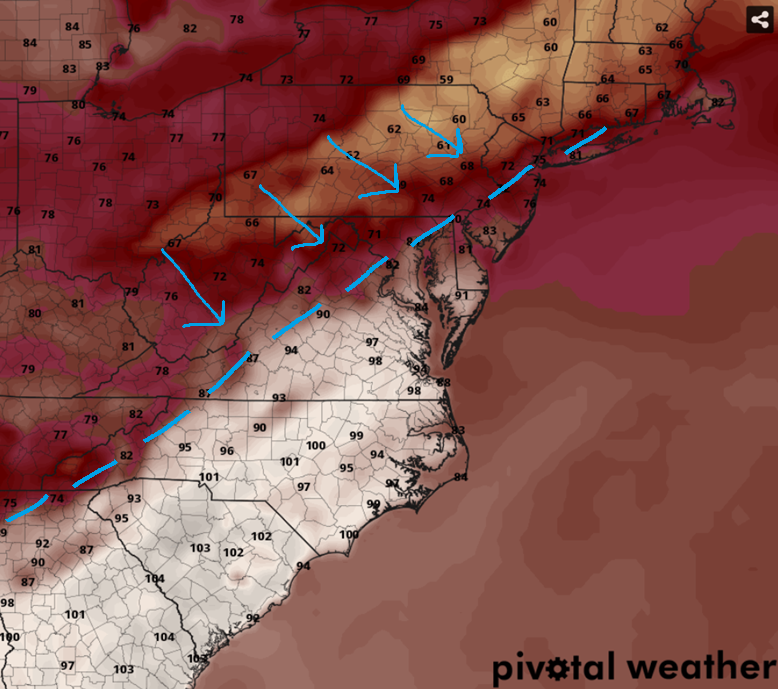

Temperatures
An overview of how meteorologists forecast high and low temperatures.

Using Models to Forecast Temperatures?

Weather models can provide a baseline for forecasting temperatures. Models such as the GFS, ECMWF, HRRR, and other regional models forecast temperature at different times of the day and at multiple levels in the atmosphere.
Meteorologists generally examine the 2m temperature — the temperature approximately 2 meters (6.5 feet) above the ground — as the standard estimate of surface air temperature.
This value is commonly used as an estimate of the air temperature near the surface and is the basis for many standard forecasts.
How Meteorologists Forecast Temperatures
Forecasters will often start by comparing different weather models. For example, if the GFS and ECMWF predicted 84°F and 82°F, while the NAM and HRRR predicted 80°F and 81°F, a forecaster might conclude that 81–83°F is more reasonable rather than blindly choosing the GFS's 84°F.
Meteorologists also learn the biases and tendencies of different models through experience and can account for them when creating forecasts. For example, the GFS is known to have a slight cold bias in the eastern U.S. during winter events, which forecasters can take into account when using it.
Factors That Cause Temperature Variability

Meteorologists also consider factors beyond weather model guidance when creating temperature forecasts. While models account for terrain, forecasters can use their knowledge of local elevation and urban heat islands to further refine temperatures. They also consider factors such as cold and warm fronts, cloud cover, and wind, which all can influence temperatures.